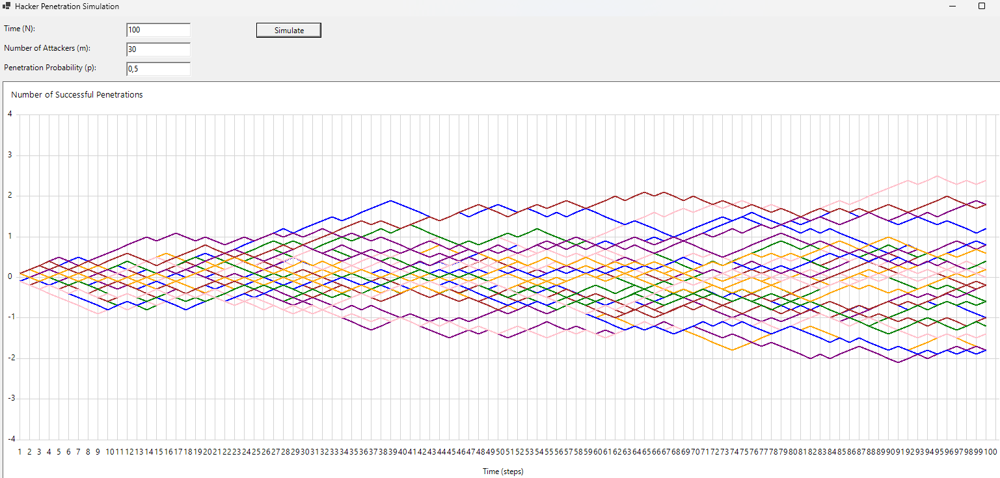

Attack Simulation Exercise
Refining the Stochastic SDE Simulator for Continuous Time
This new code simulates a continuous random walk process by dividing time into infinitesimally small intervals (∆t) and using a defined probability at each step to approximate Brownian motion. Each attacker performs a series of n steps, allowing to observe how the discrete random walk approximates a continuous Wiener process, or Brownian motion. This simulation comply to the Donsker Invariance Principle, which states that a sufficiently rescaled random walk process will tend towards Brownian motion, a phenomenon characterized by independent and stationary increments, both essential features of the Wiener Process.

Continuous Approximation in the SDE Simulation
To approximate continuous time, the temporal window is divided into very small n intervals,
each
represented by ∆t = 1/n. At each interval if the extracted random probability is greater than input
value
p, the process takes a step up by +√∆t, otherwise it steps down by
-√∆t. The steps taken are stored in the positions
array.

Brownian Motion in the Simulation
In the context of this simulation, Brownian Motion describes the result of this refined process, with the following key characteristics:
- Continuous Paths: Each path evolves without jumps, and each position depends on an accumulation of tiny, random changes.
- Mean and Variance: The expected change over time remains zero, while variance grows linearly with time. This corresponds to the scaled random walk, where steps fluctuate by ±√∆t in both directions to align with continuous Brownian dynamics.
The process assigns the direction of the step (positive or negative) randomly and uniformly, with no specific bias toward one direction (assigning a probability equal to 0.5 as input). This ensures the simulation remains symmetrical, with no tendency toward positive or negative values, replicating the Brownian motion property of oscillating around zero with random deviations over time.
The choice of step size √Δt ensures that over a sufficiently long period, the total variance grows proportionally to time, as in a Wiener process or Brownian motion.
In short, the combination of random jumps ±√Δt at each infinitesimal interval Δt provides an excellent approximation for the continuous random walk limit, producing behavior similar to Brownian motion according to the required theoretical principles.